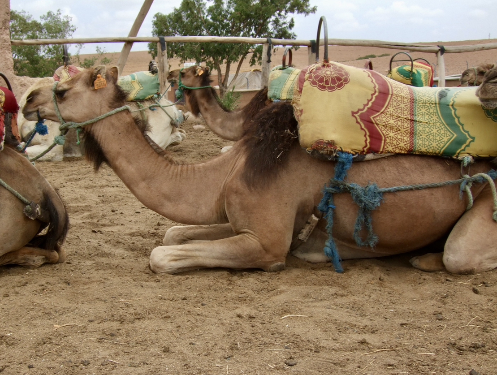

Marrakesh, Morocco
And so here I was at my laptop, scouring Google trying to find the cheapest way to get from Seville to Madrid. However in my desperate search, I spotted a $20 flight to Marrakesh from Seville, and then a $50 flight back from Marrakesh to Madrid. Of course this was probably the least cheap and most roundabout way to get from Seville to Madrid, but when else am I going to have the opportunity to hop on a $20 flight to Africa? So in my mission to find the cheapest route from southern to middle Spain, I spent $120 — the extra $50 being the fee I had to pay for carryon luggage, because RyanAir apparently hates broke people.
My friend and I landed in Morocco in the quiet of the early morning. We were dropped off in the center of the Medina — Marrakesh's maze-like conglomeration of souks (shops), packed tightly in a series of winding dirt pathways. At this hour though, the souks haven't opened yet, so we walked past alley upon alley of tan wooden doors. When we finally arrived at our hostel though, the receptionist promised that soon at 10am the souk doors would open and color would burst through.
Though of course, Ali and I couldn't wait until then, and decided to make a 40 minute walk through Marrakesh to catch glimpse of the Jardin Majorelle, a garden designed by Yves Saint Laurent. Candidly, I'd give the gardens a 7/10 — pretty enough to make it worth it if you have time to kill. It was a bit of a tourist trap, and we waited in line for over 20 minutes just to walk through the garden in another orderly line. But it was full of cactuses and bamboo, and the most beautiful color of blue. The structures inside the garden were all painted with an opaque coat of the bluest blue of blues. I soon came to learn that Marrakech was covered in this beautiful electric cobalt blue. Of course, my silly iPhone had no chance of doing this color justice.

We got lost in the sauce on our way home. We made a pit-stop at a shoe store, where Ali bought fake Yeezys and Stan Smiths for $40 USD total. It was a steal and a half and also a bit more, considering his $20 Stan Smiths were practically indistinguishable from my authentic $100 Stan Smiths, to the point where even the print on the bottom of the shoe was identical. Donning his new Yeezy's, Ali and I made our way to Jemaa el-Fna Square, which is literally a large square, similar to a marketplace. The difference was that it was full of snake charmers playing pungis and their cobras, henna stands, and a monkey with a leash. I was afraid to oggle too long at the snake charmers: firstly because I'm terrified of snakes and secondly because they begin charging you if you look too interested.
The Medina
As mentioned before, the Medina is Marrakech's personal labyrinth of winding narrow alleys that are completely packed full of shops. The souks sold everything: mother-of-pearl chessboards, spices and pigments, stained glass lamps, exquisite rugs, and trinkets of all sorts. My inner shopaholic was certainly appeased
The Medina was chaotic and easy to get lost — the narrow dirt roads were only a couple meters wide, and catered to the congested traffic of pedestrians and motorbikers alike. I was on high alert at all times, for fear that one mistep would indicate my foot getting ran over by a motorcycle wheel. The sounds of engines starting and stopping as the bikers dodged the walkers mixed seamelessly into the voices of hopeful shopkeepers luring into their stand — it made for a cacophonous and adrenalined environment. The picture below was captured during the later hours, when the traffic has slowed down.

Mountains & Camels
Now for the part of Morocco that I was most ecstatic about: CAMELS!! We had booked a daytrip to the Atlas Mountains and Agafay Desert, which were about a 2 hour drive out from Marrakech. In the Agafay Desert, we rode camels. They were much larger than I imagined, had skinny knobbly knees,and killer eyelashes. I resisted the urge to ask them for their lash rountine -- they were so long and lush, and they brought out the camel's large eyes. Atop the camel, I juggled between holding my phone and camera in each hand and holding onto the harness for my life.
